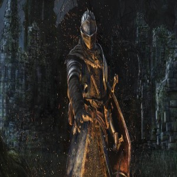

Videojuego favorito
Dark Souls
Dark souls es una videojuego creado por la empresa desarrolladora japonesa FROM SOFTWARE el 22 de septiembre de 2011 ganandose rapidamente la fama de ser un "videojuego" como los de antes. El juego se gano la fama de ser un juego relativamente complicado dado sus combates en los que un error puede costar la vida del personaje. Si el jugador es derrotado en algun lugar del basto mundo de Lordran (nombre de la tierra en el cual acontese el juego) este volvera al ultimo punto de descanso que haya tocado pero con el castigo de haber perdido todas sus almas. Las almas en este juego funcionan como moneda de cambio así como tambien es nuestra forma de subir nivel. En mi opinion, Dark souls es un juego complicado más no es imposible ni es injusto como algunos jugadores lo han tachado. Dark souls es un juego en el que no basta con subir de nivel para ser invensible, este te obliga a pensar, esta hecho para que pierdas y te estudies de tus errores, vuelvas y logres cumplir con el objetivo.
